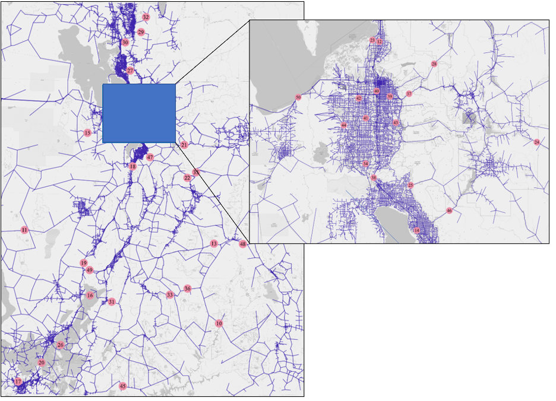

4 Applications
4.1 Overview
In this chapter, we summarize the methodology used to identify vulnerable links on Utah’s highway network. We also apply the model to scenarios where critical highway links are removed from the model network. This includes first a detailed analysis of a single scenario, where I-80 between Salt Lake and Tooele Counties is severed. We compare the model output to an alternative method that measures only the change in travel time and does not allow for mode or destination choice. The model was then applied to 41 individual link closure scenarios throughout the state.
4.2 Vulnerable Link Identification
Two methodologies were developed to identify vulnerable network links in Utah. The first method resembles the process used by AEM to determine threat categories, and threat proximity thresholds to highway links. This methodology was ultimately not used in the resiliency model. The second method uses an online Risk Priority Analysis map created by UDOT combined with familiar knowledge of Utah’s road system. Using this second method, links were identified due to their location in relation populations or geography, are suspected choke points, or because they were of interest by the BYU team or UDOT officials.
4.3 Single Scenario Analysis
This section outlines an in-depth analysis that was conducted to ensure the resiliency model was accurately capturing trips with OD pairs in the targeted area around a closed link. This analysis was done on a link between Tooele and Salt Lake City, Utah.
Scenario 50, located along I-80 between Tooele and Salt Lake Counties, was examined to ensure the resiliency model was capturing trips in the vicinity of a broken link. Analyzing the model outputs at a localized level was necessary to ensure that the model was appropriately estimating trips and capturing them in the areas that were expected. In scenario 50, if many effected trips had not been captured in Tooele and Salt Lake counties, that would have signaled that a problem was present with the model. This analysis shows that a broken link mainly effects the area surrounding that link, and the key takeaway here is that the model functions as intended. Another method to estimate trip costs is the travel time method, which serves to capture trips that have more fixed OD pairs, such as freight trips. This analysis also looks at this method in addition to the logsum estimates.
Table ?? compares the overall costs between the logsum and travel time methods, the specific cost for trips originating in Tooele and ending in Salt Lake and includes a trip comparison as well. From the ??, we can see that the logsum method captures about $173,996 in experienced expense due to the closure of the link. Specifically, between Tooele and SLC, the logsum based resiliency model captures $167,424 of expense, which is approximately 99% of the total expense as seen in ??. This shows that the resiliency model is effectively capturing trips in the correct areas based on the percent comparison capture rate in ??. When we look at the travel time method of analysis, we can see that the costs at both the local and statewide levels are much greater with $437,401 and $406,899 respectively estimated as the costs due to just the increase in travel time, not using the logit-based model.
## New names:
## * `` -> ...1
## * `` -> ...3
## * `` -> ...5
## * `` -> ...7| …1 | Total Overall Costs | …3 | Tooele - SLC Cost | …5 | Base Trips | …7 |
|---|---|---|---|---|---|---|
| Purpose | Logsum | Travel Time | Logsum | Travel Time | Tooele - SLC | Whole Network |
| HBW | 106106.36 | 244275.72 | 104645.23 | 233373.56 | 12143 | 4614 |
| HBO | 27301.33 | 108412.94 | 23961.279999999999 | 98163.53 | 3578 | 12584 |
| NHB | 40587.839999999997 | 84712.36 | 38817.089999999997 | 75361.98 | 5025 | 7154 |
| REC | 398.72 | 398.72 | 40.729999999999997 | 40.729999999999997 | 3 | 7 |
| XXP | 55870.17 | 55870.17 | $ - | $ - | 0 | 61 |
| Freight | 10883835.01 | 10883835.01 | 111772.5 | 111772.5 | 515811 | 875183 |
| Total Comparable | 173995.51999999999 | 437401.02 | 167423.6 | 406899.06 | 536560 | 899603 |
## New names:
## * `` -> ...2| Logsum / Base | …2 | Logsum / Tooele - SLC Logsum | Travel Time / Tooele - SLC Travel Time |
|---|---|---|---|
| All Trips | Tooele - SLC | ||
| 0.43 | 0.45 | 0.99 | 0.96 |
| 0.25 | 0.24 | 0.88 | 0.91 |
| 0.48 | 0.52 | 0.96 | 0.89 |
The logsum and travel time methods for determining the overall cost associated with can be broken down into overall costs, and comparable costs. The comparable costs are made up of those purposes which are included in the resiliency model. HBW, HBO, and NHB trips are included in both models, thus the results from both the logsum model and the travel time method can be compared to each other.
The travel time method measures the difference in travel time between the base scenario and any other scenario, and then multiplies that difference by the VOT for each trip purpose and the number of trips estimated for each trip purpose. For external trips, freight trips, and REC trips, these were all extracted directly from USTM. The HBW, HBO, and NHB purposes are estimated using the logsum model. Calculating the costs associated with the difference in travel time allows a better estimation of the true cost experienced by road users who are not included in the logsum based resiliency model. So, while the logit-based model is more sensitive to changes in the network, it is not able to truly estimate the costs associated with closure for those purposes that are not included in the analysis.
4.4 Comparative Scenario Results
We now apply the model to compare 40 additional scenarios where individual highway facilities are removed from the model highway network. These scenario locations are shown in Figure 4.1, and were identified in a report by AEM (2017). AEM approached the idea of systemic resiliency by attempting to classify various types of threats toward specific infrastructure types. This method, while valid, was difficult to implement statewide. Some facilities have obvious natural threats such as earthquake, flood, or landslide.

Figure 4.1: Critical Highway Links Identified using Risk Priority Analysis
This section will present the results of the 41 scenarios analyzed. First, Table ?? shows each of the scenarios, labeled “road10” for scenario 10, and “road11” for scenario 11 along with route numbers or street names, as well as a physical location where the link was cut.
| LINK_ID | ROUTE | LOCATION |
|---|---|---|
| road10 | SR-95 | near Hite |
| road11 | US-6 | near King Top |
| road12 | I-15 | in Bountiful |
| road13 | I-70 | at Dragon Point (W of Green River) |
| road14 | I-15 | in Orem between Univ. Ave & Center St |
| road15 | SR-199 | near Rush Valley |
| road16 | SR-153 | between Beaver & Junction |
| road17 | SR-18 | just North of St. George |
| road18 | I-15 | near Rocky Ridge (between Payson & Nephi) |
| road19 | I-15 | near I-70 & Filmore |
| road20 | I-15 | near New Harmony |
| road21 | US-40 | East of Strawberry Reservoir |
| road22 | US-6 | in Carbon County North of Helper |
| road23 | Legacy Parkway | near West Bountiful |
| road24 | UT-35 | outside of Francis |
| road25 | Timp Highway | at the base of AF Canyon |
| road26 | SR-14 | in Cedar Canyon |
| road27 | I-84 | between Ogden and Morgan |
| road28 | SR-65 | on the border of Salt Lake County & Morgan County |
| road29 | SR-101 | East of Hyrum |
| road30 | US-91 | between Brigham City & Mantua |
| road31 | SR-62 | East of Kingston |
| road32 | US-89 | between Logan and Bear Lake |
| road33 | SR-24 | in Capitol Reef National Park |
| road34 | Bangerter | near Bluffdale |
| road35 | SR-191 | between Helper & Duchesne |
| road36 | SR-24 | near Steamboat Point |
| road37 | I-80 | in Parley’s Canyon |
| road38 | I-15 | at the Point of the Mountain |
| road39 | I-80 | in SLC near Sugar House and 1300 E |
| road40 | I-15 | in SLC between 2100 S & 1300 S |
| road41 | I-215 | near Taylorsville |
| road42 | Bangerter | near West Valley City |
| road43 | I-215 | near Cottonwood Heights |
| road44 | MVC (UT-85) | West of West Jordan |
| road45 | US-89 | near the Border of Arizona by Lake Powell |
| road46 | SR-189 | up Provo Canyon near Vivian Park |
| road47 | US-6 | up Spanish Fork Canyon near Diamond Fork Rd |
| road48 | I-70 | near Green River (NW of Moab) |
| road49 | I-70 | near Richfield & Filmore |
| road50 | I-80 | between SLC and Tooele |
The logsum method results are as follows in Table 14. The results are ranked from the road with the largest cost to the road with the smallest cost. We can see that road 50, which corresponds to I-80 between SLC and Tooele, experiences the largest cost per day according to the resiliency model. Following road 50, roads 38, 27, 37, and 14 make up the five most important road according to the cost estimation provided by the resiliency model. Each of these roads is an Interstate facility in Northern Utah, which is heavily populated. Some roads, such as road 10, which is along SR-95 near Hite, experiences no measurable change to HBW, HBO, or NHB traffic. This is likely due to the remote location of the highway link that was cut. A ranking is provided for all of the roads in Table ??.
| Rank | Scenario | Delta | Cost Value | ROUTE | LOCATION |
|---|---|---|---|---|---|
| 1 | ROAD50 | -27839.300 | 173995.82 | I-80 | between SLC and Tooele |
| 2 | ROAD38 | -20277.800 | 126736.38 | I-15 | at the Point of the Mountain |
| 3 | ROAD27 | -19625.700 | 122660.89 | I-84 | Weber Canyon |
| 4 | ROAD37 | -13163.500 | 82272.039999999994 | I-80 | in Parley’s Canyon |
| 5 | ROAD14 | -7682.830 | 48017.71 | I-15 | in Orem between Univ. Ave & Center St |
| 6 | ROAD30 | -7079.660 | 44247.87 | US-91 | between Brigham City & Mantua |
| 7 | ROAD46 | -6009.630 | 37560.19 | SR-189 | up Provo Canyon near Vivian Park |
| 8 | ROAD41 | -5154.680 | 32216.74 | I-215 | near Taylorsville |
| 9 | ROAD17 | -4339.910 | 27124.45 | SR-18 | just North of St. George |
| 10 | ROAD18 | -3717.130 | 23232.06 | I-15 | near Rocky Ridge (between Payson & Nephi) |
| 11 | ROAD42 | -3665.700 | 22910.63 | Bangerter | near West Valley City |
| 12 | ROAD12 | -1588.610 | 9928.7900000000009 | I-15 | in Bountiful |
| 13 | ROAD25 | -1092.820 | 6830.11 | Timp Highway | at the base of AF Canyon |
| 14 | ROAD20 | -476.542 | 2978.39 | I-15 | near New Harmony |
| 15 | ROAD24 | -257.283 | 1608.02 | UT-35 | outside of Francis |
| 16 | ROAD47 | -220.368 | 1377.3 | US-6 | up Spanish Fork Canyon at Diamond Fork Rd |
| 17 | ROAD23 | -159.863 | 999.14 | Legacy Parkway | near West Bountiful |
| 18 | ROAD26 | -119.912 | 749.45 | SR-14 | in Cedar Canyon |
| 19 | ROAD15 | -80.225 | 501.41 | SR-199 | near Rush Valley |
| 20 | ROAD32 | -66.768 | 417.3 | US-89 | between Logan and Bear Lake |
| 21 | ROAD31 | -39.820 | 248.88 | SR-62 | East of Kingston |
| 22 | ROAD49 | -27.569 | 172.31 | I-70 | near Richfield & Fillmore |
| 23 | ROAD21 | -26.323 | 164.52 | US-40 | East of Strawberry Reservoir |
| 24 | ROAD29 | -25.200 | 157.5 | SR-101 | East of Hyrum |
| 25 | ROAD19 | -22.071 | 137.94 | I-15 | near I-70 & Filmore |
| 26 | ROAD22 | -21.230 | 132.69 | US-6 | in Carbon County North of Helper |
| 27 | ROAD45 | -10.441 | 65.260000000000005 | US-89 | near the Border of Arizona by Lake Powell |
| 28 | ROAD16 | -7.775 | 48.59 | SR-153 | between Beaver & Junction |
| 29 | ROAD48 | -5.883 | 36.770000000000003 | I-70 | near Green River (NW of Moab) |
| 30 | ROAD35 | -5.713 | 35.71 | SR-191 | between Helper & Dechesne |
| 31 | ROAD36 | -5.126 | 32.04 | SR-24 | near Steamboat Point |
| 32 | ROAD28 | -5.049 | 31.56 | SR-65 | border of Salt Lake & Morgan Counties |
| 33 | ROAD33 | -0.201 | 1.26 | SR-24 | in Capitol Reef National Park |
| 34 | ROAD13 | -0.012 | 7.0000000000000007E-2 | I-70 | at Dragon Point (W of Green River) |
| 35 | ROAD10 | 0.000 | $ - | SR-95 | near Hite |
| 36 | ROAD11 | 0.000 | $ - | US-6 | near King Top |
| 37 | ROAD40 | 29.891 | -186.82 | I-15 | in SLC between 2100 S & 1300 S |
| 38 | ROAD44 | 1191.213 | -7445.08 | MVC (UT-85) | West of West Jordan |
| 39 | ROAD43 | 1812.615 | -11328.84 | I-215 | near Cottonwood Heights |
| 40 | ROAD39 | 2541.037 | -15881.48 | I-80 | in SLC near Sugar House and 1300 E |
| 41 | ROAD34 | 6822.414 | -42640.09 | Bangerter | near Bluffdale |
Table ?? contains the ranking results from the travel time method. Here, we see that the first five roads differ from the results of the logsum model. Instead, road 48 becomes the most important road due to costs experienced. Road 48 is a part of I-70 near Green River, Utah. The other four roads that make up the top five most important roads in the travel time method analysis are road 13, road 20, road 50, and road 49. Some of these roads appear in both the logsum and travel time methods. Here again, several of the roads that are most important are located in Northern Utah. It is important to note that the main driving factor as to why a road was important or not in the travel time analysis was how much freight and external traffic it experienced. Including the freight, even with the logsum results, changes the rankings drastically.
| Rank | Scenario | HBO | HBW | NHB | Freight | XXP | TOTAL |
|---|---|---|---|---|---|---|---|
| 1 | ROAD48 | 2.31 | 18.06 | 16.40 | 85537717.30 | 417991.55 | 85955745.62 |
| 2 | ROAD13 | 0.00 | 0.00 | 0.07 | 25214668.62 | 95273.29 | 25309941.98 |
| 3 | ROAD20 | 873.21 | 1008.53 | 1096.65 | 19285468.81 | 234813.54 | 19523260.75 |
| 4 | ROAD50 | 27301.63 | 106106.36 | 40587.84 | 10883835.01 | 55870.17 | 11113701.00 |
| 5 | ROAD49 | 15.89 | 28.48 | 127.94 | 8118515.31 | 29826.77 | 8148514.39 |
| 6 | ROAD18 | 5278.85 | 8534.44 | 9418.77 | 5784337.92 | 143890.39 | 5951460.37 |
| 7 | ROAD27 | 56096.79 | 39697.31 | 26866.79 | 4545561.25 | 9608.65 | 4677830.80 |
| 8 | ROAD19 | 24.73 | 17.79 | 95.43 | 3377211.54 | 94820.44 | 3472169.92 |
| 9 | ROAD37 | 22074.06 | 34804.83 | 25393.16 | 2060291.60 | 5668.64 | 2148232.29 |
| 10 | ROAD47 | 89.03 | 868.43 | 419.84 | 2028078.38 | 14011.56 | 2043467.24 |
| 11 | ROAD38 | 21901.51 | 50046.84 | 54788.03 | 1732758.70 | 17292.88 | 1876787.96 |
| 12 | ROAD14 | -259.88 | 25793.30 | 22484.29 | 950455.53 | 10899.55 | 1009372.79 |
| 13 | ROAD30 | 17333.42 | 13857.91 | 13056.54 | 911254.89 | 3690.26 | 959193.02 |
| 14 | ROAD39 | -19335.84 | 5106.11 | -1651.75 | 830874.97 | 2821.03 | 817814.52 |
| 15 | ROAD22 | 44.08 | 11.04 | 77.57 | 682605.02 | 4843.35 | 687581.05 |
| 16 | ROAD45 | 14.58 | 24.91 | 25.77 | 551950.51 | 40330.43 | 592346.20 |
| 17 | ROAD21 | 34.71 | 16.42 | 113.39 | 537843.44 | 3397.73 | 541405.69 |
| 18 | ROAD12 | 453.26 | 3435.59 | 6039.94 | 377513.25 | 3445.92 | 390887.95 |
| 19 | ROAD40 | -5542.43 | 6773.59 | -1417.99 | 370214.60 | 3233.35 | 373261.13 |
| 20 | ROAD35 | 24.84 | 0.00 | 10.87 | 181286.62 | 2691.10 | 184013.42 |
| 21 | ROAD46 | 10491.62 | 12149.38 | 14919.20 | 81734.81 | 171.87 | 119466.87 |
| 22 | ROAD32 | 55.04 | 206.03 | 156.24 | 48524.89 | 0.00 | 48942.19 |
| 23 | ROAD41 | 4930.44 | 11871.22 | 15415.08 | 15154.31 | 0.00 | 47371.04 |
| 24 | ROAD16 | 13.22 | 26.42 | 8.96 | 30533.27 | 0.00 | 30581.87 |
| 25 | ROAD17 | 15003.63 | 4553.69 | 7567.12 | 2085.51 | 0.00 | 29209.96 |
| 26 | ROAD42 | 4150.58 | 11518.83 | 7241.23 | 4320.63 | 0.00 | 27231.26 |
| 27 | ROAD11 | 0.00 | 0.00 | 0.00 | 7576.95 | 0.00 | 7576.95 |
| 28 | ROAD25 | 5099.17 | 1177.88 | 553.06 | 56.27 | 0.00 | 6886.38 |
| 29 | ROAD33 | 0.00 | 1.15 | 0.11 | 4089.04 | 0.00 | 4090.30 |
| 30 | ROAD24 | 824.28 | 498.41 | 285.33 | 1884.43 | 0.00 | 3492.45 |
| 31 | ROAD36 | 9.06 | 4.02 | 18.96 | 1920.11 | 0.00 | 1952.15 |
| 32 | ROAD26 | 227.74 | 302.12 | 219.59 | 733.26 | 0.00 | 1482.71 |
| 33 | ROAD23 | 574.39 | 154.86 | 269.89 | 168.23 | 0.00 | 1167.37 |
| 34 | ROAD15 | 47.73 | 208.09 | 245.59 | 209.74 | 0.00 | 711.15 |
| 35 | ROAD31 | 32.86 | 95.94 | 120.08 | 259.51 | 0.00 | 508.38 |
| 36 | ROAD10 | 0.00 | 0.00 | 0.00 | 345.94 | 0.00 | 345.94 |
| 37 | ROAD29 | 37.13 | 119.70 | 0.67 | 1.93 | 0.00 | 159.43 |
| 38 | ROAD28 | 0.00 | 0.21 | 31.34 | 5.78 | 0.00 | 37.34 |
| 39 | ROAD44 | -8946.88 | 2539.77 | -1037.98 | 3495.97 | 0.00 | -3949.11 |
| 40 | ROAD43 | -11917.37 | 2436.49 | -1847.96 | 4930.45 | 0.00 | -6398.40 |
| 41 | ROAD34 | -21929.15 | -4681.46 | -16029.48 | 19511.32 | 0.00 | -23128.77 |
Some other interesting findings are that in the top 10 of each analysis methods, three scenarios appear in both rankings. Road 50, which corresponds to I-80 between Tooele and SLC, road 27 which corresponds to I-84 in Weber Canyon, and road 37 which corresponds to I-80 in Parley’s Canyon are included in the top 10 scenarios for both methods of analysis. This is likely due to the number of passenger trips along these routes and the number of freight trips that occur along these routes.
4.5 Positive Benefit Scenarios
Five of the scenarios indicated a benefit resulting from highway link closure. These scenarios were examined more closely to determine what causes these atypical results. The affected links are all located in Salt Lake Valley at the following locations: Bangerter Highway near Bluffdale, I-80 near 1300 E, I-15 between 2100 S and 1300 S, I-215 near Cottonwood Heights, and Mountain View Corridor near West Jordan.
It was determined that a likely cause which explains these atypical results is that the shortest path by time is not the shortest path by distance. The automobile accessibility is determined by the AM congested travel time in the Utah Statewide Travel Model (USTM). The travel distance – used to determine the accessibility of destinations by walking – is the distance of that path, and not the actual shortest distance path as might be more preferable.
When a highway link is broken, the new shortest path by time is longer than in the base scenario with this link available. But the new path may actually be shorter by distance. This causes an increase in the utility of accessing destinations by non-motorized modes, potentially overwhelming the decrease in automobile utility.
This is only observed in heavily urbanized regions for two reasons:
The presence of high-speed expressways and parallel local roads means that alternate paths with shorter distances but longer vehicle times are more likely.
The increased availability of destinations within the non-motorized distance threshold (50 miles) means that alternative destinations exist.
Overall, the results of the analysis indicate that the likely cause of a positive cost being estimated for these five scenarios is that there are easily accessible alternate routes in the area, along with competing TAZ of similar size in the DC size term equation.
4.6 Summary
The overall results show that the resiliency model is more sensitive to network changes than the travel time comparison. The ability for a user to choose both a mode and destination (or alternate destination) cause the logsum results to often estimate a smaller cost than the travel time results would. However, when the travel time results are factored in, the overall rankings of the 41 scenarios considered change dramatically. This is due to the large expenses experienced by freight traffic, which has a much higher VOT than other passenger trips do. In summary, Table ?? and Table ?? show the rankings for both the logsum and travel time analysis respectively. The logsum suggests that I-80 between Tooele and SLC is the most important road, while the travel time method, or total priority, indicates that I-70 near Green River is the most important road due to cost associated with closure.